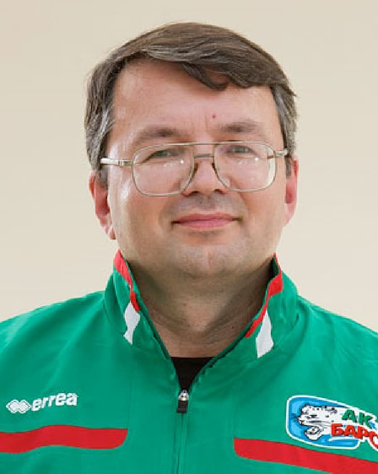

Заглушка панели KHL
Назад
Фархеев Марат Махмутович

Сотрудник пресс-службы
Дата рождения: 26.03.1981 (37 лет)
ИНФОРМАЦИЯ
В клубе – с 1998 г.
За время его работы в клубе команда добивалась следующих достижений: четырехкратный чемпион России (2006, 2009, 2010, 2018 гг.), трехкратный чемпион КХЛ и трехкратный обладатель Кубка Гагарина (2009, 2010, 2018 гг.), трехкратный серебряный призер чемпионатов России (2000, 2002, 2007 гг.), бронзовый призер чемпионата России (2004 г.), обладатель Кубка Европейских Чемпионов (2007 г.), обладатель Континентального Кубка (2008 г.).